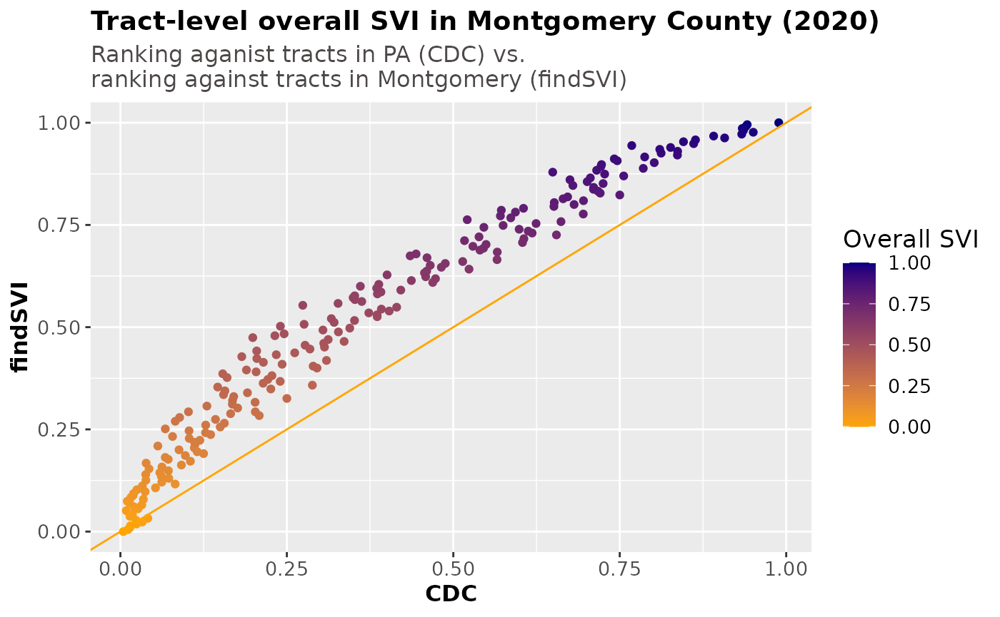

SVI in Different Geographic Context
Source:vignettes/tract-level_SVI_in_Philly.Rmd
tract-level_SVI_in_Philly.RmdSince SVI is calculated from percentile ranks of census variables, it’s important to keep in mind the SVI values may be affected by the total area that we are ranking each geographic unit against.
Currently CDC/ATSDR Social Vulnerability Index (SVI) database provides nationwide- and statewide- SVI at the census tract and county level. Nationwide-SVI will obviously include SVI for all the states, but the value may be different from the statewide-SVI for the corresponding state due to the ranking method. For example, nationwide-SVI at the census tract level is obtained by ranking the variables in each census tract among all tracts in the US, while statewide-SVI for PA at the census tract level is obtained by ranking the variables in each tract among all tracts in PA. Despite the likely different SVI values, both versions offers valuable information about the relative social vulnerability of communities within a different geographic context.
Building upon this, in addition to nation- or statewide-SVI calculations for flexible geographic levels (e.g. at the ZCTA level; mentioned in Introduction to findSVI), findSVI also supports SVI calculations for more specific geographic context (below the state level, e.g. county).
SVI ranked within all PA: CDC and findSVI strongly correlate
On the CDC/ATSDR SVI database, SVI results are available in the format of shapefile and data table (.csv). After downloading and importing the data for the whole Pennsylvania into R (using the sf package for shapefile), we’ll filter by the county and only keep the data for Philadelphia (which happens to be the city itself).
#source: https://www.atsdr.cdc.gov/placeandhealth/svi/data_documentation_download.html
#For shapefile
unzip("../../../Pennsylvania.zip",
exdir = "pa_ct_2020_shapefile", junkpaths = T,
overwrite = F)
cdc_svi_pa_ct_2020 <- sf::st_read("pa_ct_2020_shapefile/SVI2020_PENNSYLVANIA_tract.shp")
#For csv
cdc_svi_pa_ct_2020 <- readr::read_csv("../Pennsylvania.csv")
cdc_svi_phl_2020 <- cdc_svi_pa_ct_2020 %>%
select(1:7, contains("RPL_THEME")) %>%
#CDC use -999 as NAs
filter(RPL_THEMES>= 0,
COUNTY == "Philadelphia")
glimpse(cdc_svi_phl_2020)
#> Rows: 388
#> Columns: 12
#> $ ST <chr> "42", "42", "42", "42", "42", "42", "42", "42", "42", "42",…
#> $ STATE <chr> "Pennsylvania", "Pennsylvania", "Pennsylvania", "Pennsylvan…
#> $ ST_ABBR <chr> "PA", "PA", "PA", "PA", "PA", "PA", "PA", "PA", "PA", "PA",…
#> $ STCNTY <chr> "42101", "42101", "42101", "42101", "42101", "42101", "4210…
#> $ COUNTY <chr> "Philadelphia", "Philadelphia", "Philadelphia", "Philadelph…
#> $ FIPS <chr> "42101000101", "42101000102", "42101000200", "42101000300",…
#> $ LOCATION <chr> "Census Tract 1.01, Philadelphia County, Pennsylvania", "Ce…
#> $ RPL_THEME1 <dbl> 0.3105, 0.2976, 0.7757, 0.1388, 0.4349, 0.0029, 0.0567, 0.8…
#> $ RPL_THEME2 <dbl> 0.2015, 0.0029, 0.0464, 0.2955, 0.2479, 0.0012, 0.0620, 0.1…
#> $ RPL_THEME3 <dbl> 0.7213, 0.5299, 0.9150, 0.8115, 0.8057, 0.6070, 0.5797, 0.8…
#> $ RPL_THEME4 <dbl> 0.5494, 0.9005, 0.9729, 0.9576, 0.9582, 0.3605, 0.6789, 0.9…
#> $ RPL_THEMES <dbl> 0.3802, 0.2253, 0.7677, 0.5244, 0.6817, 0.0059, 0.1658, 0.8…As a proof of concept, we’ll use findSVI to reproduce CDC/ATSDR’s version of tract-level SVI using percentile ranks aganist all tracts in PA, and select the tracts in Philadelphia County. Putting both versions of SVI on a scatterplot, we can see they are highly consistent.
pa_ct_svi_2020 <- find_svi(
2020,
state = "PA",
geography = "tract"
)
phl_ct_2020_svi_PA <- pa_ct_svi_2020 %>%
filter(str_detect(NAME, "Philadelphia County"))
phl_ct_svi_check <- cdc_svi_phl_2020 %>%
rename(
GEOID = FIPS,
CDC_SVI = RPL_THEMES,
CDC_SVI1 = RPL_THEME1,
CDC_SVI2 = RPL_THEME2,
CDC_SVI3 = RPL_THEME3,
CDC_SVI4 = RPL_THEME4
) %>%
left_join(phl_ct_2020_svi_PA %>%
rename(findSVI_SVI = RPL_themes),
by = "GEOID")
phl_ct_svi_check %>%
ggplot(aes(x = CDC_SVI, y = findSVI_SVI)) +
geom_point()+
geom_abline(slope = 1, intercept = 0, color = 'orange')+
labs(title = "Tract-level overall SVI in Philadelphia (2020)",
subtitle= "CDC/ATSDR vs. findSVI (ranking aganist tracts in PA)",
x = "CDC",
y = "findSVI")+
theme_minimal()+
theme(
text = element_text(size = 13),
plot.title = element_text(size = 16, hjust = 0, face = "bold"),
plot.subtitle = element_text(color = "#4D4948", size = 13, hjust = 0),
axis.title = element_text(size = 12, face = "bold"),
legend.title = element_text(size = 13)
)With a little peace of mind, we will now look at how SVI is affected if we use percentile ranks against just tracts in Philadelphia County instead of all PA.
SVI ranked within Philadelphia
To retrieve census data and calculate SVI for a specific county, we
need to use get_census_data() and get_svi()
(as oppose to the one-step find_svi for state-level data
processing).
phl_ct_2020_data <- get_census_data(
2020,
state = "PA",
county = "Philadelphia",
geography = "tract"
)
phl_ct_svi_2020 <- get_svi(2020, phl_ct_2020_data)
svi_clean <- phl_ct_svi_2020 %>%
select(GEOID, contains("RPL_theme")) %>%
drop_na()
glimpse(svi_clean)
#> Rows: 390
#> Columns: 6
#> $ GEOID <chr> "42101000101", "42101000102", "42101000200", "42101000300",…
#> $ RPL_theme1 <dbl> 0.1080, 0.1414, 0.4267, 0.0437, 0.2057, 0.0026, 0.0180, 0.5…
#> $ RPL_theme2 <dbl> 0.2128, 0.0103, 0.1333, 0.2282, 0.2641, 0.0026, 0.1179, 0.1…
#> $ RPL_theme3 <dbl> 0.1769, 0.0436, 0.5359, 0.3051, 0.2923, 0.0769, 0.0615, 0.4…
#> $ RPL_theme4 <dbl> 0.3846, 0.7282, 0.9154, 0.9128, 0.9436, 0.3308, 0.8436, 0.9…
#> $ RPL_themes <dbl> 0.1385, 0.0846, 0.4692, 0.2538, 0.3974, 0.0000, 0.1333, 0.5…If we plot out overall SVI using the two different ranking methods, we can observe an interesting pattern, where they correlate well at both ends of the SVI spectrum but correlate poorly in the middle. Specifically, SVI using ranks against PA tracts (CDC) appears higher than using SVI using ranks against tracts within Philadelphia (findSVI).
join_svi <- cdc_svi_phl_2020 %>%
rename(
GEOID = FIPS,
CDC_SVI = RPL_THEMES,
CDC_SVI1 = RPL_THEME1,
CDC_SVI2 = RPL_THEME2,
CDC_SVI3 = RPL_THEME3,
CDC_SVI4 = RPL_THEME4
) %>%
left_join(svi_clean %>%
rename(findSVI_SVI = RPL_themes),
by = "GEOID")
join_svi %>%
ggplot(aes(x = CDC_SVI, y = findSVI_SVI, color = findSVI_SVI)) +
geom_point()+
scale_color_gradient(low = "orange", high = "navy")+
geom_abline(slope = 1, intercept = 0, color = 'orange')+
labs(title = "Tract-level overall SVI in Philadelphia (2020)",
subtitle= "Ranking aganist tracts in PA (CDC) vs. \nranking against tracts in Philadelphia (findSVI)",
x = "CDC",
y = "findSVI",
color = "Overall SVI")+
theme(
text = element_text(size = 13),
plot.title = element_text(size = 16, hjust = 0, face = "bold"),
plot.subtitle = element_text(color = "#4D4948", size = 12, hjust = 0),
axis.title = element_text(size = 12, face = "bold"),
legend.title = element_text(size = 13)
)
Quantitatively, the correlation coefficient between two versions of SVI is 0.9055097, suggesting a discrepancy that perhaps warrants more discussion.
SVI ranked within another county
–Montgomery, for example.
Let’s follow the same steps as above:
Select the tracts for Montgomery County from downloaded data (ranking against tracts within PA).
Calculate SVI with findSVI for Montgomery County (ranking against tracts within the county)
cdc_svi_mont_2020 <- cdc_svi_pa_ct_2020 %>%
select(1:7, contains("RPL_THEME")) %>%
filter(RPL_THEMES>= 0,
COUNTY == "Montgomery")
mont_data <- get_census_data(
2020,
state = "PA",
county = "Montgomery",
geography = "tract"
)
mont_ct_svi_2020 <- get_svi(2020, mont_data)
mont_svi <- mont_ct_svi_2020 %>%
select(GEOID, contains("RPL_theme")) %>%
drop_na()
join_svi2 <- cdc_svi_mont_2020 %>%
rename(
GEOID = FIPS,
CDC_SVI = RPL_THEMES,
CDC_SVI1 = RPL_THEME1,
CDC_SVI2 = RPL_THEME2,
CDC_SVI3 = RPL_THEME3,
CDC_SVI4 = RPL_THEME4
) %>%
left_join(mont_svi %>%
rename(findSVI_SVI = RPL_themes),
by = "GEOID")
join_svi2 %>%
ggplot(aes(x = CDC_SVI, y = findSVI_SVI, color = findSVI_SVI)) +
geom_point()+
scale_color_gradient(low = "orange", high = "navy")+
geom_abline(slope = 1, intercept = 0, color = 'orange')+
labs(title = "Tract-level overall SVI in Montgomery County (2020)",
subtitle= "Ranking aganist tracts in PA (CDC) vs. \nranking against tracts in Montgomery (findSVI)",
x = "CDC",
y = "findSVI",
color = "Overall SVI")+
theme(
text = element_text(size = 13),
plot.title = element_text(size = 14, hjust = 0, face = "bold"),
plot.subtitle = element_text(color = "#4D4948", size = 12, hjust = 0),
axis.title = element_text(size = 12, face = "bold"),
legend.title = element_text(size = 13)
)
Mmm, there’s also a discrepancy particularly in the middle of the SVI spectrum, but the curve is now “concave down”–SVI ranked against PA tracts (CDC) is lower than SVI ranked against Montgomery tracts (findSVI).
Distribution of SVI variables
As mentioned before, SVI is a composite percentile rank of 16 census variables. Percentile rank is a concept that represents the percentage of values in a distribution that are equal to or below a specific value. It is a way to express the relative standing or position of a particular value within a distribution. Importantly, if a distribution changes the percentile rank will change, even if the value being ranked stays the same. This may be one of the explanations why we observe the discrepancies in SVI using different ranking methods.
For example, the percentile rank of percentage of minority (EP_MINRTY) of a tract in Philadelphia will differ depending on what it is being ranked against: against tracts in Philadelphia vs. tracts in PA. This is because the distribution of tract-level percentage of minority is very different for Philadelphia and PA.
df1 <- cdc_svi_pa_ct_2020 %>%
select(GEOID = FIPS, contains("EP_")) %>%
#adjunt var
select(-c("EP_NOINT", "EP_AFAM", "EP_HISP", "EP_ASIAN",
"EP_AIAN", "EP_NHPI", "EP_TWOMORE", "EP_OTHERRA")) %>%
mutate(area = "PA")
df2 <- mont_ct_svi_2020 %>%
select(GEOID, contains("EP_")) %>%
mutate(area = "MONTCO")
df3 <- phl_ct_svi_2020 %>%
select(GEOID, contains("EP_")) %>%
mutate(area = "PHL")
density_df <- bind_rows(df1, df2, df3) %>%
pivot_longer(cols = 2:17, names_to = "EP_var") %>%
drop_na() %>%
filter(value >= 0)
density_df %>%
filter(EP_var == "EP_MINRTY",
area != "MONTCO") %>%
ggplot(aes(x = value, group = area, fill = area))+
geom_density(adjust = 1.5, alpha = 0.4)+
theme_bw()+
labs(title = "Distribution of Tract-level EP_MINRTY (2020)",
x = "Pct. Minority",
fill = "Area")+
theme(
text = element_text(size = 10),
plot.title = element_text(size = 14, hjust = 0.5, face = "bold"),
axis.title = element_text(size = 12, face = "bold"),
legend.title = element_text(size = 13)
)The data distribution within an area can be considered as the “context” of SVI, and this context matters as many variables turn out to have different distribution among PA, Philadelphia and Montgomery County.
ggplot(data = density_df, aes(x = value, group = area, fill = area))+
geom_density(adjust = 1.5, alpha = 0.4)+
facet_wrap(~EP_var, scales = 'free')+
theme_bw()+
labs(title = "Distribution of Tract-level SVI Variables (2020)",
x = "Percent estimate of each variable",
fill = "Area")+
theme(
text = element_text(size = 10),
plot.title = element_text(size = 14, hjust = 0, face = "bold"),
axis.title = element_text(size = 12, face = "bold"),
legend.title = element_text(size = 13)
)Out of the 16 SVI variables, several show variation in data distribution among the three regions of interest, such as EP_MINRTY, percentage of persons with no high school diploma (EP_NOHSDP), percentage of persons below 150% poverty (EP_POV150) and percentage uninsured in the noninstitutionalized population (EP_UNINSUR). In many of these cases, the values of SVI variables are concentrated at the lowest level for Montgomery County and the highest level for Philadelphia County, with PA in the middle.
In keeping with the pattern, the table below summarizes median values of the SVI variables in the 4 different themes for the three regions discussed above: PA, Philadelphia County and Montgomery County.
var_theme <- variable_e_ep_calculation_2020 %>%
select(var = x2020_variable_name, theme) %>%
filter(str_detect(var, "EP_"),
theme%in%c(1:4))
density_df %>%
group_by(area, EP_var) %>%
summarize(median = median(value), .groups = "drop") %>%
ungroup() %>%
pivot_wider(values_from = median, names_from = area) %>%
select(var = EP_var, PA, PHL, MONTCO) %>%
left_join(var_theme, by = "var") %>%
arrange(theme) %>%
mutate(
theme_name = case_match(
theme,
1 ~ "Socioeconomic Status",
2 ~ "Household Characteristics",
3 ~ "Racial and Ethnic Minority Status",
4 ~ "Housing Type or Transportation")) %>%
kable()| var | PA | PHL | MONTCO | theme | theme_name |
|---|---|---|---|---|---|
| EP_HBURD | 23.3 | 34.90 | 22.20 | 1 | Socioeconomic Status |
| EP_NOHSDP | 7.4 | 12.05 | 4.05 | 1 | Socioeconomic Status |
| EP_POV150 | 16.6 | 30.80 | 7.60 | 1 | Socioeconomic Status |
| EP_UNEMP | 4.6 | 7.90 | 3.90 | 1 | Socioeconomic Status |
| EP_UNINSUR | 4.3 | 6.20 | 2.50 | 1 | Socioeconomic Status |
| EP_AGE17 | 20.1 | 20.00 | 21.30 | 2 | Household Characteristics |
| EP_AGE65 | 18.2 | 12.60 | 16.60 | 2 | Household Characteristics |
| EP_DISABL | 13.9 | 15.70 | 9.40 | 2 | Household Characteristics |
| EP_LIMENG | 0.5 | 1.90 | 1.00 | 2 | Household Characteristics |
| EP_SNGPNT | 4.6 | 8.35 | 3.90 | 2 | Household Characteristics |
| EP_MINRTY | 13.7 | 70.00 | 20.95 | 3 | Racial and Ethnic Minority Status |
| EP_CROWD | 0.7 | 2.05 | 0.60 | 4 | Housing Type or Transportation |
| EP_GROUPQ | 0.2 | 0.40 | 0.20 | 4 | Housing Type or Transportation |
| EP_MOBILE | 0.4 | 0.00 | 0.00 | 4 | Housing Type or Transportation |
| EP_MUNIT | 3.2 | 7.45 | 8.60 | 4 | Housing Type or Transportation |
| EP_NOVEH | 6.6 | 28.35 | 3.90 | 4 | Housing Type or Transportation |
Two angles of a story
While SVI using percentile ranks against all PA tracts offers a broad perspective into community vulnerability relative to the state, SVI using ranks against tracts within the county (or region of interest) focuses on local context, comparing communities to their immediate surroundings.
When examining the social vulnerability within a smaller region, especially metropolitan areas/cities, it may be helpful to consider the context during calculation to better understand the disparities between different communities.